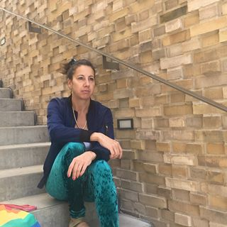

»Načini zdravljenja bolečin v sklepih šokirajo«. Slavni japonski revmatolog je dal iskreni intervju naši reviji
Dr. Yoshinori Ohsumi je profesor na Tokijski Medicinski univerzi, Nobelov nagrajenec za medicino. Prejel je Nobelovo nagrado za odkritje mehanizma avtofagije, tj. zdravljenja in pomladitve organizma na celični ravni.
Lani je Yoshinori Ohsumi obiskal Evropo, ker se je želel seznaniti z izkušnjami svojih kolegov. Rekel je, da se to, kar je videl v Evropi, ne da razlagati. V evropskih državah, po besedah Dr. Ohsumija, sploh ni medicine...
Po odmevnih nastopih na Japonskem, se je dr. Ohsumi odločil dati intervju naši reviji. Kaj slavnemu doktorju ni bilo všeč v revmatologiji? In zakaj pravi, da v Evropi sploh NI MOGOČE SE ZNEBITI BOLEZNI SKLEPOV?
– Med svojim nastopom pred japonskimi novinarji ste rekli, da vas je šokiralo to, kar ste videli v Evropi. Lahko to komentirate?
– Iskreno povem, da imam dober odnos do Evrope, evropske kulture na splošno in do Evropejcev. Toda stanje vaše medicine res preseneča naše zdravnike. Medicina pri vas zaostaja vsaj za 20 let ali celo za 30 let. Vsaj v tem, kar se tiče revmatologije.
Glavni načini zdravljenja sklepov so KYTTA-SALBE, ARTHROVITAN in druga podobna zdravila
Ampak vsi japonski zdravniki vedo, da ta zdravila NE ZDRAVIJO BOLEZNI SKLEPOV! Nimajo takega učinka! Lahko samo odstranijo bolečino za nekaj časa. Torej bolečina in oteklina mineta, oseba se veseli, vendar v sklepu ni bistvenih sprememb. Ostajajo tako uničeni, kot so bili. Torej bodo čez nekaj časa spet boleli. Kaj naredijo zdravniki v tem primeru? Pravijo, da je bolezen kronična in se je ne da popolnoma znebiti.
Na Japonskem zdaj ni takih pojmov, kot sta KRONIČNA ARTROZA ali KRONIČNI ARTRITIS. Zakaj? Ker se artroza in artritis, pa tudi vse druge bolezni sklepov, uspešno zdravijo.
Zakaj zdravniki to počnejo? Po mojem mnenju je problem v samem medicinskem sistemu. Dejstvo je, da nihče, niti zdravnik, niti lekarniška društva ne želijo popolnoma ozdraviti človeka. Nasprotno, za njih je ugodno, če človek k njim pride spet in spet. Najbolj pa me je presenetilo dejstvo, da na TV ves čas govorijo o neki lekarniški mafiji, ki naj bi imela oblast nad vsem. Ampak nihče s tem nič ne naredi. Nikogar to ne briga!
Vaši zdravniki in farmacevti jemljejo zadnji denar, ki ga imajo upokojenci, in to velja za nekaj normalnega.
– In kako je na Japonskem glede zdravljenja bolnih sklepov?
– Veliko večino bolezni se da uspešno ozdraviti. Japonski znanstveniki so že zdavnaj razumeli, da ni treba odpravljati posledic patologije (bolečine, omejitve mobilnosti, vnetje itd.).), vendar je treba najti vzrok za njih. To pomeni, da se je treba znebiti tega, kar povzroči uničenje sklepov. Uničeni pa so zaradi poslabšanja krvnega obtoka, ki se zgodi PRI VSEH STAREJŠIH LJUDEH.
Glejte, bom poskusil to razložiti preprosto . Dotok krvi v sklep se začne z velikimi arterijami, ki so zraven sklepa. Krvni pretok skozi žile nasiti tkivo v sklepih. Veje žil so majhne kapilare. S starostjo se zamašijo s holesterolom in kri preneha teči skozi njih. Posledično se tako vnos hranil v sklep in odstranitev nepotrebnih snovi iz sklepov poslabšata.
 Primer dotoka krvi v kolenski sklep
Primer dotoka krvi v kolenski sklep
Stanje hrustanca se poslabša, tam se začne patološki proces sušenja, sklep izgubi elastičnost. Kaj pa temu sledi? Nato pa se zgodi naslednje: odprtina se zoži, kosti se dotaknejo in povzročijo trenje. To povzroča pokanje in škripanje.
Ker se predelane snovi ne odstranjujejo več iz sklepa, je zamašen, pojavljajo se kostni izrastki, osteofiti. Njihova hitra rast vodi v krčenju žil in živčnih končičev, kar povzroči vnetja in bolečino.
Vse bolezni sklepov, ne glede na vrsto in naravo, imajo en vzrok, to je kršitev krvnega obtoka. Zdaj pa si razmislite, kaj je treba narediti, da bi se sklep obnovil? Pravilno! Obnoviti krvni obtok.
Na srečo se hrustančne celice lahko regenerirajo . To pomeni, da pri ustreznih pogojih (normaliziranju krvnega obtoka) se lahko sklep v celoti obnovi. Človek se bo znebil bolečin in vnetij. Sklep postane mobilen kot v mladosti. Za vedno! Človeku ne bo več treba piti protibolečinskih tablet in nanositi mazil. Vam se ne bo treba bati, da se bo neko gibanje spremenilo v strašno bolečino. Ljudje postanejo popolnoma zdravi.
– Kako se da obnoviti krvni obtok v sklepih?
– Danes obstajajo zelo dobra zdravila, ki obnavljajo krvni obtok v sklepih. Ena od najpomembnejših aktivnih sestavin teh zdravil je Tanini. Ta snov lahko prodre v molekule holesterola in jih uniči od znotraj. Tako se očistijo tudi majhne kapilare.
Na primer, zelo dober pripravek, namenjen izboljšanju krvnega obtoka in obnovi sklepov je Cannabis Oil. Poleg TaniniCannabis Oil vsebuje še številne druge sestavine, namenjene izboljšanju delovanja sklepov. Ne bom naštel vseh, ampak samo nekatere.
|
Omega-9, Omega-6, Omega-3 v najbolj idealnem razmerju. |
Normalizira sestavo sinovijske (intraartikularne) tekočine, poveča elastičnost hrustanca. |
|
Palmitična in stearinska kislini. |
Zaustavi vnetni proces in zavira uničenje sklepov. |
|
Naravni antioksidanti. |
Preprečuje zgodnje staranje artikularnih tkiv. |
|
Klorofil. |
Močne analgetične sestavine, ki lajšajo bolečine na nevronski ravni. |
|
Visoka vsebnost vitaminov A, B, C, E, K, D. |
Izboljšajo regeneracijo hrustančnega in kostnega tkiva, normalizirajo metabolizem, povečajo imunost. |
Kot vidite, ima Cannabis Oil kompleksni učinek .
– Tega zdravila se ne da kupiti v lekarnah?
– Saj v tem je stvar, da ne. Zdravniki raje zaslužijo čim več pri zdravljenju upokojencev in bolnikov, namesto tega, da bi jim pomagali. Ampak ni nobenega dvoma, da revmatologi, vsaj tiste, ki jih zanimajo nove metode zdravljenja, vedo o zdravilnih lastnosti olja iz morskega psa in njegovem pozitivnem vplivu na sklepe.
Kolikor vem, je proizvajalec Cannabis Oil želel vstopiti na farmacevtski trg. Vendar mu to ni uspelo, saj so si izmislili nešteto ovir (nič se ne da narediti s to birokracijo). To je razumljivo, če se bo to zdravilo pojavilo v lekarnah, bo lekarniška mafija ogromno izgubila. Saj je farmakologija danes biznis! Celo na Japonskem. Vendar je na Japonskem ta posel pošten (namenjen izboljšanju zdravja ljudi), v Evropi pa ni!
– Kakšen nasvet bi dali ljudem z bolezni sklepov, ki živijo v Evropi?
– Navadni ljudje, zlasti starejši od 50 let, najbolj trpijo zaradi zaostalosti medicine. Na srečo pa obstaja rešitev. Skupaj s kolegi iz Japonske smo naredili spletno stran, na kateri lahko kupite Cannabis Oil. Cenejši je, dostopen in enostaven za uporabo.
Zdaj bom povedal, kaj je treba storiti, da bi dobili Cannabis Oil:
Treba je:
- Preiti na uradno spletno stran Cannabis Oil in pustiti naročilo;
- Čez nekaj časa vas bo poklical svetovalec in vam odgovoril na vsa vprašanja. Povedali mu boste naslov za dostavo.;
- Čez 5-7 dni bo potrebno priti na pošto in prejeti pošiljko.
Uradna spletna stran Cannabis Oil deluje že 3 mesece. Več tisoč državljanov je že izkoristilo to priložnost. Vseh, ki so dobili zdravilo, prosimo oceniti, kako jim je pomagal pripravek. Trenutno se je anketiranja udeležilo več kot 3000 ljudi.
Rezultati anketiranja:
- Sklepi so prenehali boleti,ni več pokanja ali omejitve mobilnosti – 98% anketirancev
- Odstranitev vnetja, tudi znotraj sklepov – 97% anketirancev
- Ni več bolečin zaradi vremenskih sprememb – 94% anketirancev
- Močne izboljšave delovanja sklepov na splošno – 99% anketirancev
Kako dolgo bodo prodajali Cannabis Oil?
– Dokler se ne bo razprodana ta serija. Moram pa vas opozoriti, da je ostalo zelo malo paketov Cannabis Oil. Vse več ljudi ga naroča v zadnjem času. Verjetno so se ljudje izvedeli o njegovi visoki učinkovitosti v primerjavi z navadnimi neučinkovitimi sredstvi.
Dokler je dodeljeno število paketov Cannabis Oil še na voljo, ga priporočam vsakemu, ki ima boleče v sklepih, naročiti na uradni spletni strani
 Mojca
Mojca
Hvala! Zanimiv članek! Res je, da je naša medicina zaostala. Naročila sem Cannabis Oil!
 Mark Juvan
Mark Juvan
Eden sem med tistimi, ki so že poskusili Cannabis Oil. Res je najboljši. Sklepi so me boleli več let. Rame in kolena so me ves čas bolela. Zdaj sploh ne bolijo. Samo po enem ciklusu uporabe.
 Žan Dolinar
Žan Dolinar
Star sem 63 let. Sklepi so bili skoraj popolnoma uničeni zaradi artroze. Hodil sem s palico. Bolečina je bila huda, še posebej ponoči. Nisem si mislil, da se bom lahko kdaj znebil bolečine. Zdaj lahko celo tečem! In to pri mojih letih! Lani sva se z ženo zdravila z Cannabis Oil. Hčerka ga je pripeljala po počitnicah v tujini.
Ana Jakobič
Strinjam se z doktorjem!! Naša medicina nikoli ni bila dobra. Vsi želijo samo dobiti denar in nihče nima vesti. Prisegla sem že, da ne bom šla k zdravnikom, ker nima smisla. Hvala zdravnikom, ki pomagajo navadnim ljudem.…
 Jan
Jan
S pomočjo Cannabis Oil sem se znebil osteohondroze. Naročil sem ga na spletni strani pred 2 mesecema po akciji.
Sofja Kolenc
Naročila sem. Obljubili so mi, da bom v nekaj dneh dobila pošiljko. Zelo čakam.
 Boris Vidmar
Boris Vidmar
Res je nekaj čudovitega! Pred enim tednom so me sklepi tako boleli, da nisem vedel, kam naj grem. Danes sploh ne bolijo. En teden uporabljam Cannabis Oil. Japonski znanstveniki so zelo dobri!
 Sergeja Novak
Sergeja Novak
Stara sem 61 let. Uporabljala sem Cannabis Oil. Kakšno leto pred tem so me boleli sklepi in se dobesedno zvili. Kosti so me bolele: komolci, kolena in vse kosti od kolen do gležnjev. Šla sem k zdravnikom, rekli so, da sem popolnoma zdrava. Pa še vretence in kosti nad medenico so stalno pokali. Vse to je minilo, ko sem začela nanositi Cannabis Oil. Moja prijateljica ga mi je svetovala. Tudi jo je rešil!
 Lara Marolt
Lara Marolt
Oba z možem sva upokojena. Oba imava boleče sklepe. Ne moreva si privoščiti dragega zdravljenja, zato takoj, ko sva izvedela o Cannabis Oil, sva ga naročila. Uporabljava tretji teden. Celo zdravnik je rekel, da se je stanje sklepov znatno izboljšalo.
 Jelena Jenko
Jelena Jenko
Stara sem 51 let, od tega 26 let me mučijo bolečine v hrbtu zaradi osteohondroze. Vse, kar sem uporabljala, je bilo zaman! Jeseni 2010 se je pojavila kila hrbtenice, kirurgi so vztrajali pri operaciji. Zavrnila sem, stalno sem jemala zdravila proti bolečinam in protivnetne tablete in dobila injekcije. Rezultata pa ni bilo. Zaradi zdravil so me boleli kolki in nisem mogla hoditi. Revmatolog je predlagal stalno jemati hondroprotektorje. Ampak tudi oni niso veliko pomagali. Na začetku lanskega leta so japonski prijatelji poslali Cannabis Oil. Po enem ciklusu uporabe so VSI sklepi postali popolnoma zdravi. Zelo priporočam vsem naročiti ta pripravek. Kupila sem ga takrat za polno ceno.Tedaj je bil zelo drag. Za vsak slučaj sem naročila še eno škatlico. Ta cena je skoraj trikrat cenejša od tega, kolikor je takrat stal.
 Miha Kovačič
Miha Kovačič
Včeraj sem dobil pošiljko. Do nedavnega sem mislili, da je to prevara. Ampak je zdravilo že pri meni in sem ga skoraj brezplačno dobil.
 Ana Turk
Ana Turk
Meni je tudi Cannabis Oil pomagal se znebiti artroze in protina! Zelo dobro zdravilo.
 Matej Bošnjak
Matej Bošnjak
Sosed se je pogosto pritoževal zaradi bolečin v sklepih. V zadnjem mesecu pa ga vidim aktivnega in veselega. Rekel je, da je uporabljal Cannabis Oil. Star je 72 let.
 Magda Simčič
Magda Simčič
Uspelo mi je naročiti. Ko so še na voljo.
 Nina Smolej
Nina Smolej
Hvala!
Komentarji